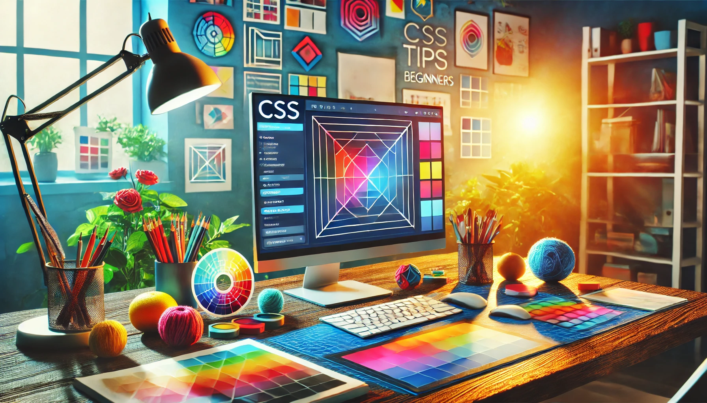

CSS Tips for Beginners: Style Your Website Like a Pro
Published: December 18, 2024
Transform your website design skills with these essential CSS tips tailored for beginners.
CSS (Cascading Style Sheets) is the magic that makes websites visually appealing. As an electrical engineer and tech enthusiast, I’ve explored CSS to design intuitive interfaces for projects. Here are my top tips to enhance your CSS skills:
1. Master the Box Model
The CSS Box Model is fundamental. Every HTML element is a box, consisting of margins, borders, padding, and content. Understand this to control spacing and layout effectively.
div {
margin: 10px; /* Space outside the element */
border: 2px solid black; /* Border around the element */
padding: 5px; /* Space inside the element */
}
2. Use Flexbox for Layouts
Flexbox simplifies layout design, making it easier to align items. Whether you’re centering elements or creating responsive designs, Flexbox is your best friend.
.container {
display: flex;
justify-content: center;
align-items: center;
height: 100vh;
}
3. Organize Your Styles
Keep your CSS clean and organized. Use comments to group related styles and adopt a consistent naming convention for classes.
4. Leverage Variables
CSS variables help maintain consistency. Define reusable values for colors, fonts, and sizes.
:root {
--primary-color: #3498db;
--font-size: 16px;
}
button {
background-color: var(--primary-color);
font-size: var(--font-size);
}
5. Test Responsiveness
Ensure your website looks great on all devices. Use media queries to adjust styles for different screen sizes.
@media (max-width: 768px) {
.container {
flex-direction: column;
}
}
CSS can feel overwhelming at first, but with practice, it becomes second nature. Start experimenting, and don’t hesitate to seek inspiration from design galleries or communities!